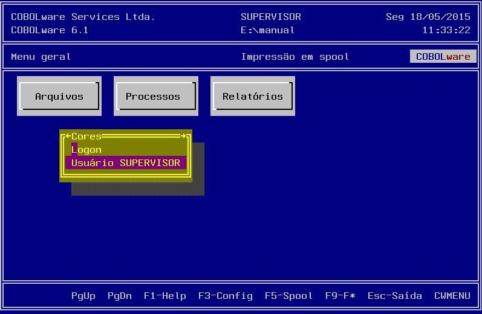
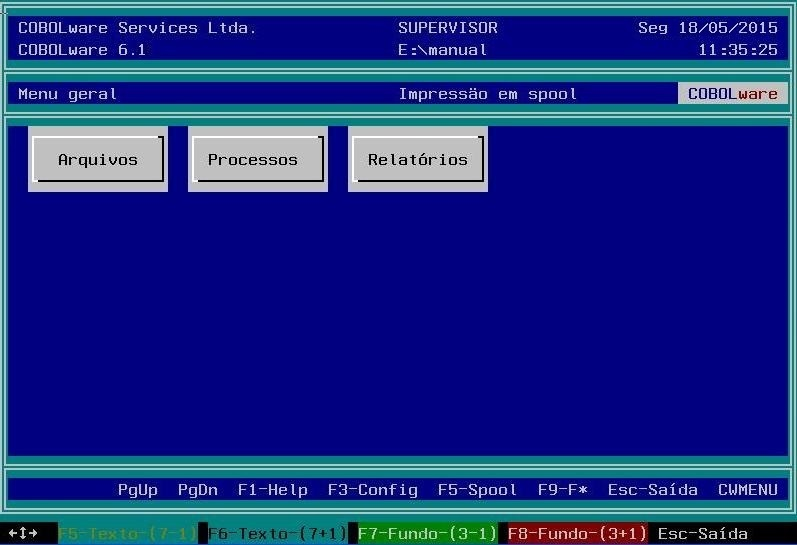

Configura o padrão de cores do modo texto.
Caso o usuário corrente tenha privilégio de super usuário será permitido alterar as cores da tela de logon (tela de abertura neste momento, o usuário ainda não foi identificado) outros privilégios só permitem alterar as preferências pessoais.

Para alterar a cor de uma região da tela basta posicionar o cursor ou o ponteiro do mouse na área a colorir e clicar com um dos botões do mouse ou utilizar as teclas F5, F6, F7 e F8, a cor vai sendo alterada na região da tela afetada. Quando surgir uma cor que agrade basta teclar Esc pare encerrar e salvar.
